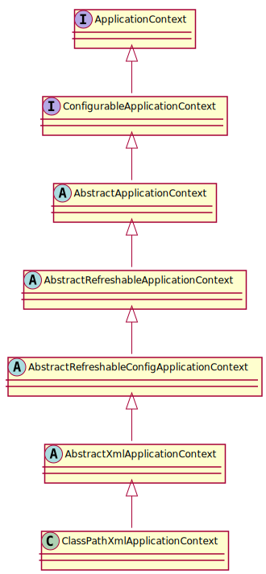

Spring (五) - 容器的功能扩展
使用 BeanFactory 加载 XML:
1
| BeanFactory bf = new DefaultListableFactory(new ClassPathResource("beanFactoryTest.xml"));
|
使用 ApplicationContext 加载 XML:
1
| ApplicationContext bf = new ClassPathXmlApplicationContext("beanFactoryTest.xml");
|
支持将配置文件路径以数组的方式传入:
1 2 3 4
| public ClassPathXmlApplicationContext(String configLocation) throws BeansException { this(new String[] {configLocation}, true, null); }
|
1 2 3 4 5 6 7 8 9
| public void setConfigLocations(String... locations) { if (locations != null) { this.configLocations = new String[locations.length]; for (int i = 0; i < locations.length; i++) { this.configLocations[i] = resolvePath(locations[i]).trim(); } } }
|
设置了路径之后，便可以根据路径做配置文件的解析以及各种功能的实现了:
1 2 3 4 5 6 7 8 9 10 11 12 13 14 15 16 17 18 19 20 21 22 23 24 25 26 27 28 29 30 31 32 33 34 35 36
| @Override public void refresh() throws BeansException, IllegalStateException { synchronized (this.startupShutdownMonitor) { prepareRefresh(); ConfigurableListableBeanFactory beanFactory = obtainFreshBeanFactory(); prepareBeanFactory(beanFactory); try { postProcessBeanFactory(beanFactory); invokeBeanFactoryPostProcessors(beanFactory); registerBeanPostProcessors(beanFactory); initMessageSource(); initApplicationEventMulticaster(); onRefresh(); registerListeners(); finishBeanFactoryInitialization(beanFactory); finishRefresh(); } catch (BeansException ex) { } } }
|
